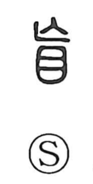

盲

Kun: meshii, kurai | On: mou
blindness ・ blind person
Explanation
盲 is a phono-semantic character with 亡 supplying the sound. The form 亡 originally pictured the bones of a dead person with arms and legs drawn up; by loan it also came to carry the sense of “not, nothing.” The whole graph names one who has lost the use of the eyes—a blind person (meshii). The Shuowen glosses it as “eyes without pupils.” Related characters such as 瞽 also mean “blind,” and in antiquity titles like 瞽史 referred to historiographers: many sightless people served as keepers of memory, reciting records, and were frequently found among ritual musicians and shamans.